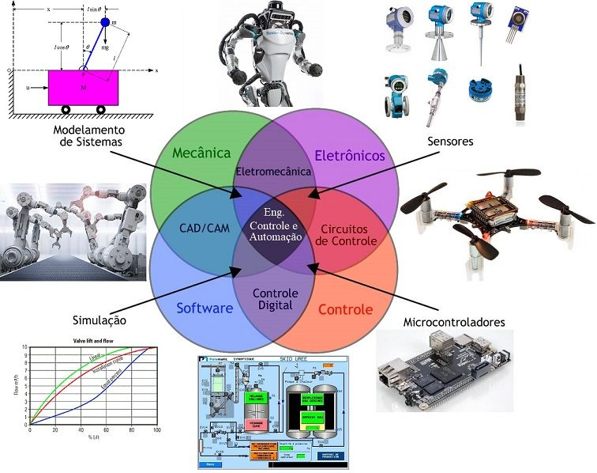
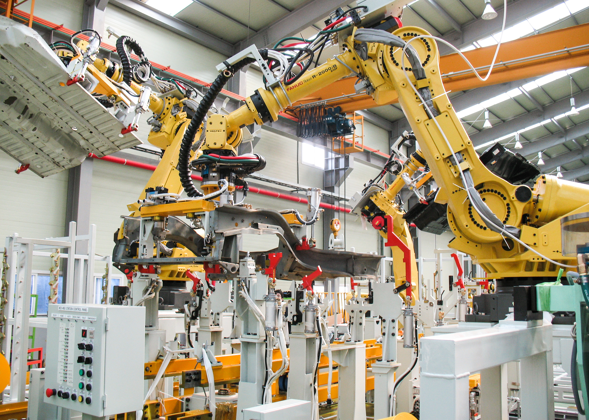
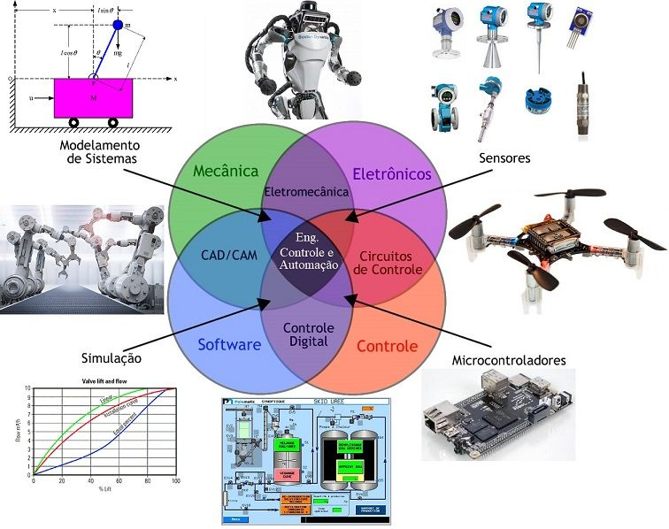
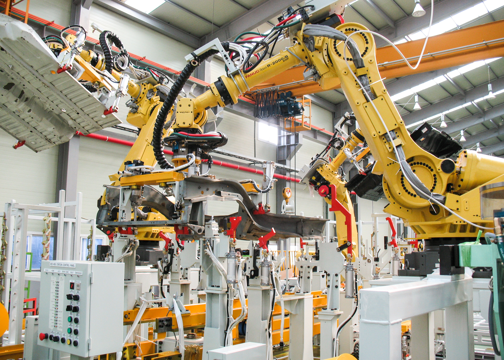

A automação é um sistema que utiliza processos automáticos para controlar e operar mecanismos e sistemas. Ela usa técnicas computadorizadas ou mecânicas para otimizar processos produtivos em vários setores da economia.
A automação pode melhorar a eficiência, reduzir erros e liberar os humanos para se concentrarem em tarefas mais complexas. Além disso, a automação pode ser usada para melhorar a segurança e a qualidade dos produtos e serviços.
À medida que a tecnologia continua a avançar, espera-se que a automação desempenhe um papel cada vez mais importante em nossas vidas e na economia global.
 



.